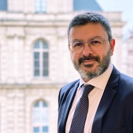
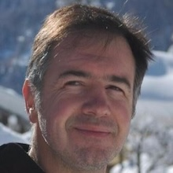
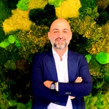
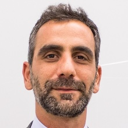
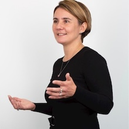
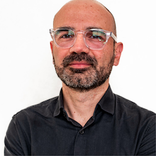
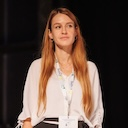
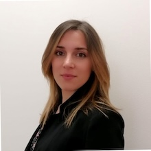
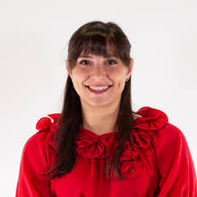

A half-day workshop dedicated to advancing the practical operationalization of Responsible AI in financial systems - bridging research progress and real-world deployment.
Responsible AI in finance must move from principles to practice.
The challenge is no longer just to innovate but to innovate responsibly. RAIOps4Fin explores how Responsible AI can move beyond principles and become part of the everyday deployment of financial AI systems. The workshop brings together researchers, practitioners, and regulators to turn fairness, transparency, robustness, privacy, and governance into actionable solutions.
By connecting cutting-edge research with deployment needs, RAIOps4Fin aims to foster practical knowledge exchange and shape trustworthy, auditable, and production-ready AI for the financial sector.
RAIOps4Fin explores how Responsible AI can be effectively designed, governed, and deployed in financial systems. Case studies, frameworks, and experience reports addressing the practical deployment and operationalization of Responsible AI in financial systems are welcomed.
We welcome papers and encourage submissions that demonstrate practical relevance, empirical validation, or deployment experience.
Submissions are limited to 6 pages excluding references and appendices. Formatting guidelines of the host ICAIF conference should be used.
Reviewing is double-blind. There is no rebuttal period. At least one author of each accepted paper must register and attend to present the work.
All accepted papers are invited to an oral slot.
Accepted papers of at least 5 pages may be considered for inclusion in the CEUR Workshop Proceedings, subject to the authors’ consent. Further details regarding the publication process will be provided after the review process.

Professor at Catholic University of the Sacred Heart, Italy.
Artificial Intelligence ethicist and president of the Association of AI Ethicists.

Head of Data Science & Responsible AI, Intesa Sanpaolo, Italy.

Managing Director, Responsible AI Lead for Italy & Greece, Accenture, Italy.

Country Chief Data Officer, Generali, Italy.

Managing Director, EMEA Lead for Responsible AI, Accenture, Italy.

Full Professor of Data Science and AI, University of Milano – Bicocca, Italy.
! The schedule times are not confirmed yet.



TBD
// The program committee is subject to updates as more members are confirmed.